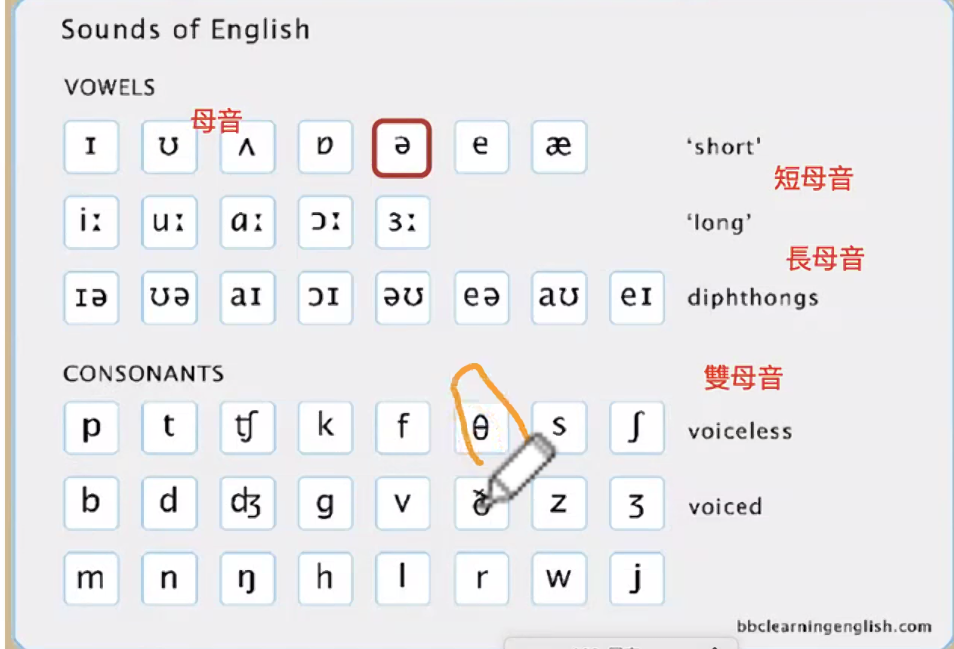
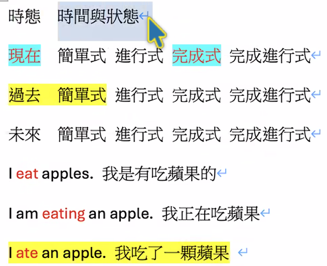
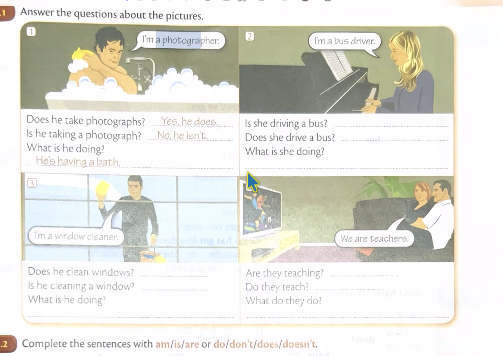
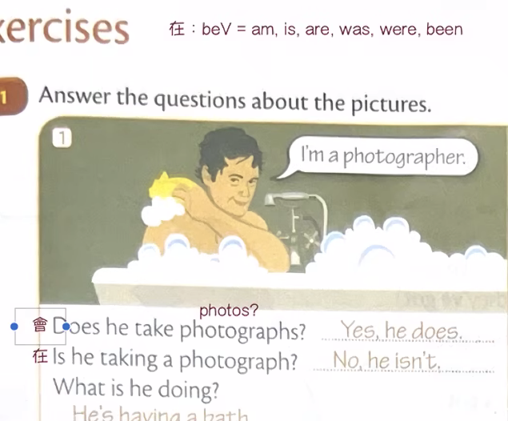

theorynoun
UK
/ˈθɪə.ri/US/ˈθɪr.i/理論。開頭是 θ——舌頭輕輕咬在牙齒中間吹氣，不是ㄙ也不是ㄈ。
課堂筆記整理 · 素材來自英文頻道 9/09、9/16 · 共 10 個單字、5 則文法、4 張課本頁
點單字右邊的「唸」可以聽發音（手機需開聲音）。課本頁的字已經抄成文字，搜尋搜得到。
/ˈθɪə.ri/US/ˈθɪr.i/理論。開頭是 θ——舌頭輕輕咬在牙齒中間吹氣，不是ㄙ也不是ㄈ。
/θret/US/θret/威脅。跟 theory 同一個 θ 開頭。
/beɪð/US/beɪð/洗澡、浸泡。結尾是 ð——跟 θ 同一個嘴型，但是有聲的（喉嚨會震）。
/ˈmeθ.əd/US/ˈmeθ.əd/方法。中間是 θ。
/ˈɔː.θər/US/ˈɑː.θɚ/作者。課堂原話：「ㄜㄈㄜˊ，或者阿佛」——這是拿注音去逼近 θ，但真正的音不是ㄈ，是咬舌吹氣。
/ˈfeð.ər/US/ˈfeð.ɚ/羽毛。中間是 ð（有聲）。跟 father 只差一點點，別混。
/ˈkləʊ.ðɪŋ/US/ˈkloʊ.ðɪŋ/衣物（不可數）。中間 ð；UK 的 /əʊ/ 跟 US 的 /oʊ/ 嘴型起點不一樣。
/saʊər/US/saʊr/酸的。
/θruː/US/θruː/穿過。課堂原話：「ou 在這兩邊發不同音」——sour 的 ou 唸 /aʊ/，through 的 ou 唸 /uː/，同樣兩個字母、兩種唸法。
/dɪˈsɪʒ.ən/US/dɪˈsɪʒ.ən/決定。課堂原話：「ʒ = 捲」——舌頭往後捲、帶喉音的「ㄖ／ㄓ」之間那個音。
1. 時態 ＝ 時間 × 狀態（3 × 4 = 12 格）
課堂原話：「歐洲語言都建立在這個上面，每個時間都有四個狀態，這十二個有各自的邏輯。」
3 個時間 × 4 個狀態 ＝ 12 種時態
白話：先決定「什麼時候」（現在／過去／未來），再決定「是哪一種狀態」（平常都這樣／正在做／已經做完／做了一陣子還在做）。兩個一配，就是十二種。
2. 簡單式＝常態，進行式＝當下
課堂原話：「其中的 Does 是常態性，現在簡單式也是個描述常態性的時態。」
3. 一個完整的句子 ＝ S + V + O
課堂原話：「所有的句子，以一個完整的句子來說，必須要是＝ 主角 + 動作 + 對象。」
為什麼 I going to work 不行：go 是動詞，但原型動詞加上 -ing 就變成名詞了，所以整句只剩名詞、沒有動詞，要補一個 be 動詞（am）回去當動作。
4. to + 動詞、動詞 + ing ＝ 一件「事情」，不是動作
課堂原話：「be 動詞前面是主詞，後面是受詞。」
5. 靜態動詞（沒有動作的動詞）
課堂原話：「is / am / are 是靜態動詞，沒有動作的動詞。我覺得、我堅持、我認為、我答應，這些沒有實質動作的動詞就叫做靜態動詞。」
白話：這些動詞是在描述「心裡的狀態」，不是身體在動，所以通常不加 -ing。你不會說 I am thinking it is good 來表達「我覺得它很好」。



